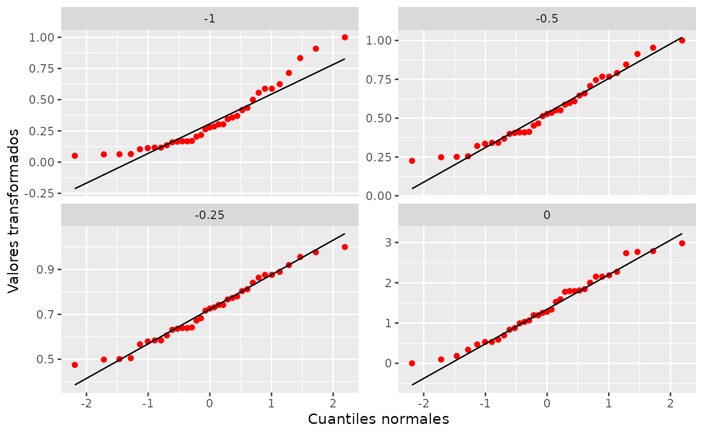

Returns normal QQ plots for a set of power transformations. If there are groups in the data, transformations can be applied separately to each of them.
gg_pt( df, vble, group = NULL, taus = c(-1, -0.5, -0.25, 0, 0.25, 0.5, 1), xlabel = "Normal quantiles", ylabel = paste("Transformed", quo_text(vble)), nrow = 2, ... )
Arguments
| df | dataframe |
|---|---|
| vble | numeric variable in df to be transformed |
| group | optional character or factor grouping variable in df. Defaults to NULL. |
| taus | vector of numeric values for the power transformations (0 is considered to be the log transform) |
| xlabel | x-axis label |
| ylabel | y-axis label |
| nrow | number of rows for facet_wrap, only applied when group is NULL. |
| ... | parameters to be passed to stat_qq(), such as size, color, shape. |
Value
a ggplot
Examples
gg_pt(dplyr::filter(fusion, nv.vv == "VV"), time, taus = c(-0.25, -0.5, -1, 0), xlabel = "Cuantiles normales", ylabel = "Valores transformados", nrow = 3, color = "red")# With groups gg_pt(fusion, time, nv.vv)